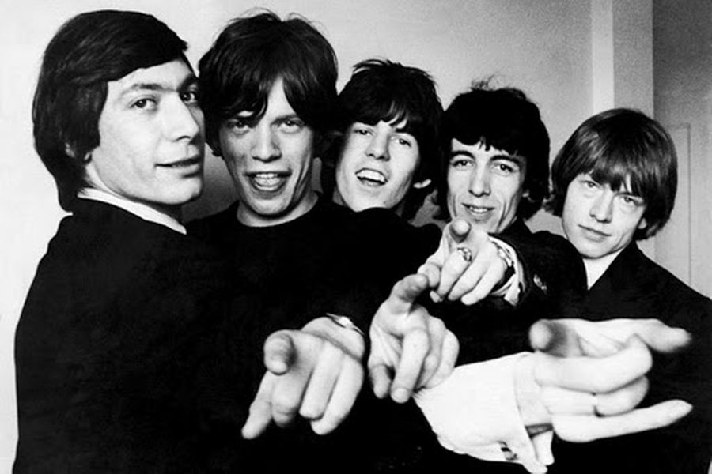

Bandas Legendarias del Rock
The Beatles
The Beatles fue una banda de rock británica activa durante la década de 1960, y reconocida como la más exitosa comercialmente y la más alabada por la crítica en la historia de la música popular y de la música rock. Formada en Liverpool, estuvo constituida desde 1962 por John Lennon , Paul McCartney, George Harrison y Ringo Starr.
Más sobre The Beatles
The Rolling Stones

The Rolling Stones es una banda británica de rock originaria de Londres. La banda se formó en abril de 1962 por Brian Jones, Mick Jagger, Keith Richards, Bill Wyman, Charlie Watts e Ian Stewart. Están considerados como una de las más grandes e influyentes bandas de toda la historia del rock, siendo una de las agrupaciones que sentó las bases del rock contemporáneo
Más sobre The Rolling Stones
Pink Floyd
Pink Floyd fue una banda de rock británica, fundada en Londres en 1965. Es considerada un ícono cultural del siglo XX y una de las bandas más influyentes y aclamadas en la historia de la música, obtuvieron gran popularidad gracias a su música psicodélica que evolucionó hacia el rock progresivo y rock sinfónico con el paso del tiempo. Es conocida por sus canciones de alto contenido filosófico, la experimentación sónica, las innovadoras portadas de sus discos y sus elaborados espectáculos en vivo. Inicialmente el grupo estaba formado por Nick Mason, Richard Wright, Roger Waters y Syd Barrett
Más sobre Pink Floyd
Deep Purple
Deep Purple es una banda británica de hard rock formada en 1968 en Hertford, Reino Unido. Está considerada como una de las pioneras de dicho subgénero, y los pioneros del heavy metal. Su música ha incorporado elementos del rock progresivo, rock sinfónico, rock psicodélico, blues rock, funk rock, britpop y la música clásica. SU alineación más fomosa fue la conformada por Ian Gillan, Ritchie Blackmore, Jon Lord, Ian Paice y Roger Glover
Más sobre Deep Purple
Led Zeppelin

Led Zeppelin fue un grupo británico de hard rock fundado en Londres en 1968 por el guitarrista Jimmy Page. La banda también estuvo integrada por John Paul Jones, Robert Plant y John Bonham. Led Zeppelin presentó elementos de un amplio espectro de influencias, como el blues, el rock and roll, el soul, la música celta, la música india, el folk, y el country, siendo uno de los grupos seminales para el surgimiento del heavy metal.
Más sobre Led Zeppelin